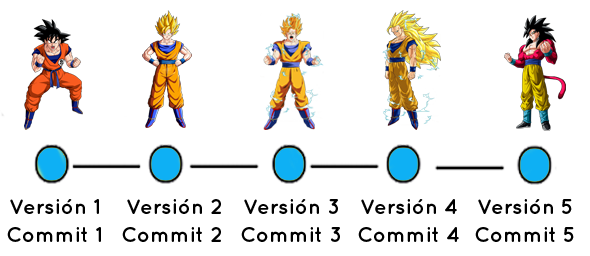

Git
Table of Contents
- 1. ¿Qué es GIT?
- 2. ¿Qué es un control de versiones?
- 3. ¿Qué es un repositorio de código?
- 4. Repositorios gratuitos
- 5. Comandos más comunes
- 6. git init
- 7. git clone
- 8. Ciclo de vida de los archivos
- 9. git status
- 10. git add
- 11. git commit
- 12. Ignorando archivos
- 13. Viendo diferencias
- 14. Eliminando archivos
- 15. Viendo el histórico de confirmaciones
- 16. Viendo el histórico de cambios
- 17. Viendo el histórico de cambios
- 18. Otros comandos útiles
- 19. Ejercicio
1 ¿Qué es GIT?
GIT es un software de control de versiones diseñado por Linus Torvalds, pensando en la eficiencia y la confiabilidad del mantenimiento de versiones de aplicaciones cuando estas tienen un gran número de archivos de código fuente.
2 ¿Qué es un control de versiones?
Se llama control de versiones a la gestión de los diversos cambios que se realizan sobre los elementos de algún producto o una configuración del mismo. Una versión, revisión o edición de un producto, es el estado en el que se encuentra el mismo en un momento dado de su desarrollo o modificación.

3 ¿Qué es un repositorio de código?
El repositorio es el lugar en el que se almacenan los datos actualizados e históricos de cambios, a menudo en un servidor. A veces se le denomina depósito o depot. Puede ser un sistema de archivos en un disco duro, un banco de datos, etc.

4 Repositorios gratuitos
- www.bitbucket.org
- www.github.com
5 Comandos más comunes
6 git init
Permite inicializar un repositorio local de código, i.e. sólo va a estar en tu máquina. Puede ser utilizado para crear un nuevo repositorio o migrar uno existente desde otro control de versiones.
Va a crear un directorio llamado .git que va a contener todos los metadatos necesarios para la gestión del proyecto. El directorio .git sólo va existir dentro de la raíz del proyecto.
7 git clone
Permite clonar un repositorio de código existente para que sea trabajado de forma local. La clonación puede ser desde la misma máquina o desde una máquina remota. Si es una clonación remota, esta es hecha a través de dos protocolos:
- http
- Protocolo de transferencia de hypertexto
- ssh
- Secure Shell
Forma de uso:
git clone https://github.com/ratrabbit/ProyectoIS-1.git git clone git@github.com:ratrabbit/ProyectoIS-1.git
8 Ciclo de vida de los archivos
Mientras trabajamos en un repositorio git, los archivos tienen un ciclo de vida que siempre siguen en git.

9 git status
La principal herramienta para determinar que archivos están en que estado, es a través de git status. Si ejecutas este comando justo después de clonar un repositorio, debería de verse algo como:
$ git status On branch master nothing to commit, working directory clean
Si modificamos alguno de los archivos que están dentro del repositorio, al ejecutar el comando de git status, la salida debería de verse algo como lo siguiente:
$ git status # On branch master # Untracked files: # (use "git add <file>..." to include in what will be committed) # # README nothing added to commit but untracked files present (use "git add" to track)
10 git add
Para iniciar el seguimiento de los cambios de un archivo dentro de git, vamos a hacer uso del comando git add. Por ejemplo:
git add README
Podemos darnos cuenta de que se ejecutó correctamente el comando si hacemos un git status
$ git status # On branch master # Changes to be committed: # (use "git reset HEAD <file>..." to unstage) # # new file: README #
- Nota
- puedes agregar múltiples archivos a git add
11 git commit
Una vez que ya agregamos archivos para darles seguimiento, cada vez que hagamos una modificación y queramos hacer registro de dichos cambios, hay que usar el comando git commit.
git add README git commit
Al ejecutar el comando git commit, abrirá tu editor de texto favorito para editar el mensaje del cambio registrado. En caso de que no quieras hacerlo a partir del editor, puedes utilizar la bandera -m
git commit -m "Mi mensaje"
12 Ignorando archivos
Cuando uno trabaja con un repositorio de código, hay ocasiones que necesitamos ignorar archivos que no nos son útiles en nuestros proyectos. Para hacer esto existe un archivo llamado .gitignore donde puedes definir las extensiones que no quieres utilizar.
$ cat .gitignore *.[oa] *~
13 Viendo diferencias
Usando git diff puedes ver las diferencias de tus cambios que no has confirmado. Ejemplo:
$ git diff
diff --git a/benchmarks.rb b/benchmarks.rb
index 3cb747f..da65585 100644
--- a/benchmarks.rb
+++ b/benchmarks.rb
@@ -36,6 +36,10 @@ def main
@commit.parents[0].parents[0].parents[0]
end
+ run_code(x, 'commits 1') do
+ git.commits.size
+ end
+
run_code(x, 'commits 2') do
log = git.commits('master', 15)
log.size
14 Eliminando archivos
Para eliminar un archivo del seguimiento de git, debes de utilizar la herramienta git rm y después confirmar los cambios.
$ git rm README $ git commit
15 Viendo el histórico de confirmaciones
Para ver el historial de los cambios que has realizado, git provee una herramienta que te ayuda a visualizar esos cambios. Esta herramienta es git log.
- git log
Una de las opciones más útiles es -p, que muestra las diferencias introducidas en cada confirmación. También puedes usar la opción -2, que hace que se muestren únicamente las dos últimas entradas del histórico:
- git log -p 2
16 Viendo el histórico de cambios
Git log trae además múltiples banderas para poder generar la visualización del histórico a tu gusto, por ejemplo podemos ver el siguiente comando.
- git log --graph --decorate --pretty=oneline --abbrev-commit
17 Viendo el histórico de cambios
- -p
- Muestra el parche introducido en cada confirmación.
- –word-diff
- Muestra el parche en formato de una palabra.
- –stat
- Muestra estadísticas sobre los archivos modificados en cada confirmación.
- –shortstat
- Muestra solamente la línea de resumen de la opción –stat.
- –name-only
- Muestra la lista de archivos afectados.
- –name-status
- Muestra la lista de archivos afectados, indicando además si fueron añadidos, modificados o eliminados.
- –abbrev-commit
- Muestra solamente los primeros caracteres de la suma SHA-1, en vez de los 40 caracteres de que se compone.
- –relative-date
- Muestra la fecha en formato relativo (por ejemplo , “2 weeks ago” (“hace 2 semanas”)) en lugar del formato completo.
- –graph
- Muestra un gráfico ASCII con la historia de ramificaciones y uniones.
- –pretty
- Muestra las confirmaciones usando un formato alternativo. Posibles opciones son oneline, short, full, fuller y format (mediante el cual puedes especificar tu propio formato).
- (no term)
- –oneline cómodo acortamiento de la opción –pretty=oneline –abbrev-commit.
18 Otros comandos útiles
18.1 git checkout rama
18.2 git checkout -b nuevarama
18.3 git push
18.4 git fetch
18.5 git pull
19 Ejercicio
- Crear un repositorio en github
- Crear un repositorio local
- Agregar un README al repositorio local
- Enlazar el repositorio local al de github
- Subir en una confirmación (commit) la tarea de ayer
- Subir en una confirmación (commit) un archivo explicando los comandos que usaron para resolver esta tarea.